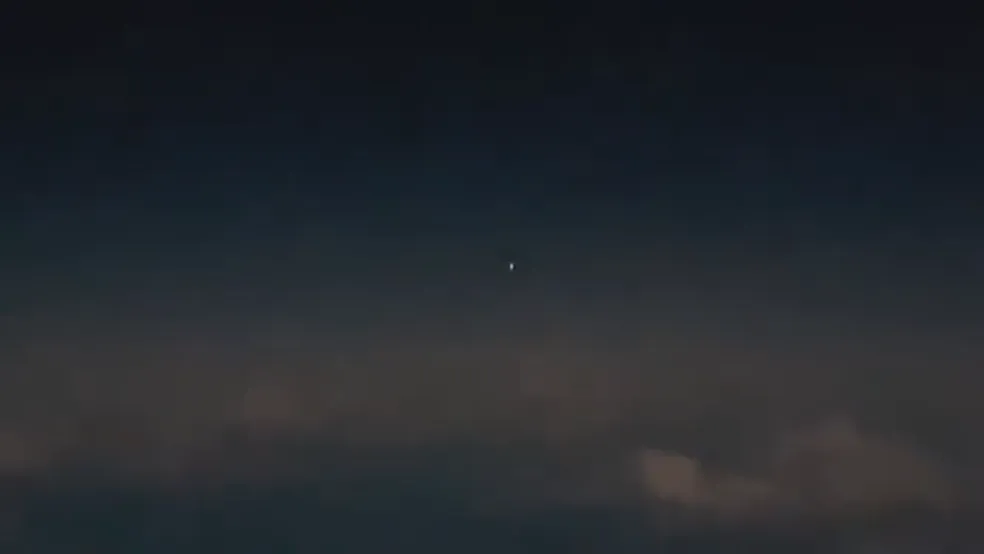

Luzes 'não identificadas' no céu de Porto Alegre podem ser reflexos do Sol em satélites, diz astrônomo
Já representante dos aeronautas afirma que pilotos sabem diferenciar luz refletida em satélites. Fotógrafo registrou fenômeno no Litoral Norte do estado.

As luzes não identificadas que intrigam pilotos de avião há cinco dias no céu de Porto Alegre podem ser reflexos do Sol em painéis de satélites. A hipótese é levantada pelo astrônomo e diretor-técnico da Rede Brasileira de Monitoramento de Meteoros, Marcelo Zurita.
O fenômeno vem ocorrendo desde a última sexta-feira (4). Pilotos de aviões comerciais relataram os episódios à torre de controle do Aeroporto Salgado Filho. Zurita afirma, no entanto, que existem diversas possibilidades sob análise.
"A hipótese que a gente está trabalhando e que me parece mais coerente é o que a gente chama de 'flyers de satélite', reflexos da luz do Sol nos painéis de satélites que passam a milhares de quilômetros de distância. Eles acabam refletindo a luz do Sol diretamente na direção do observador e acaba gerando essa condição rara da gente observar esse fenômeno", diz.